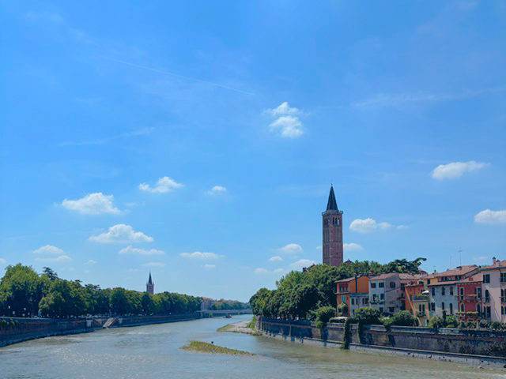

BACKGROUND
美容・ウェルネス・住まいに関わる仕事を通じて、約20年、お客様一人ひとりと向き合ってきました。
美容部員として接客・販売に携わった後、アロマセラピーを中心としたウェルネスの分野へ。施術や接客だけでなく、メニュー開発や集客、販促物の制作、自身のリラクゼーションスペースの運営など、サービスを形にし、お客様へ届けることにも携わってきました。
その後は住まいに関わる仕事にも携わり、美容、ウェルネス、暮らしと異なる分野に身を置きながら、それぞれの場所で「人が何を求めているのか」に向き合ってきました。

DESIGN
これまで人と向き合う中で培ってきた、
相手の声に耳を傾け、想いや情報を整理していく姿勢は、デザインにおいても大切にしています。
デザインは見た目を整えるだけではなく
「何を、誰に、どうしたら伝わるか」
を考えることから始めます。
「こんなことを伝えたい」
「何から始めればいいか分からない」
そんな段階からでも、お話を伺いながら想いや情報を整理し、伝わる形を一緒に考えていきます。
ご縁がありましたら、あなたやサービスの想いをぜひ聞かせてください。